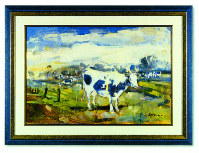

Steakhouse Jara Hechtel-Eksel
Het vlees dat wij versnijden is van jonge runderen afkomstig, daardoor is het eerder roze van kleur. Al het vlees wordt vers in onze keuken versneden zodat u het dik of dun gesneden kunt bestellen.
Geniet tijdens de lente en zomer van de rust en een heerlijke steak op ons terras.
Laat het smaken,
Annemie & Valentin
Ook dit jaar zijn we op Valentijnsdag open
Maandag 14 februari 2022. ❤️

Belgisch witblauw
Belgisch Witblauw combineert perfect met de hedendaagse keuken, het is een ras dat zijn naam dankt aan zijn egaal witte vacht met een blauwe schijn.
Vergeet de gekende witte en zwarte vlekken, dat zijn meestal melkkoeien. In het verleden gebruikten boeren witblauwrunderen als dubbeldoelras, maar tegenwoordig is het een echt vleesdier. Het is groot en gespierd. Vaak zijn het dikbillen, runderen met sterk ontwikkelde spieren.
Het staat garant voor kwaliteitsvol vlees: het is mals, sappig, minder vet, uniek van smaak en mooi rood van kleur.
Met Witblauw rundsvlees blijf je eindeloos combineren: geserveerd als filet pur, tussenrib of gegrilde filet mignon, of in een winters stoofpotje met tijm ...
Door zijn fijne, zachte textuur is het Belgisch Witblauw toegankelijk voor elke beef-eter.
Contact
Openingsuren
Vrijdag: 17:00 - 22:00
Zaterdag: 17:00 - 22:00
Zondag: 12:00 - 22:00